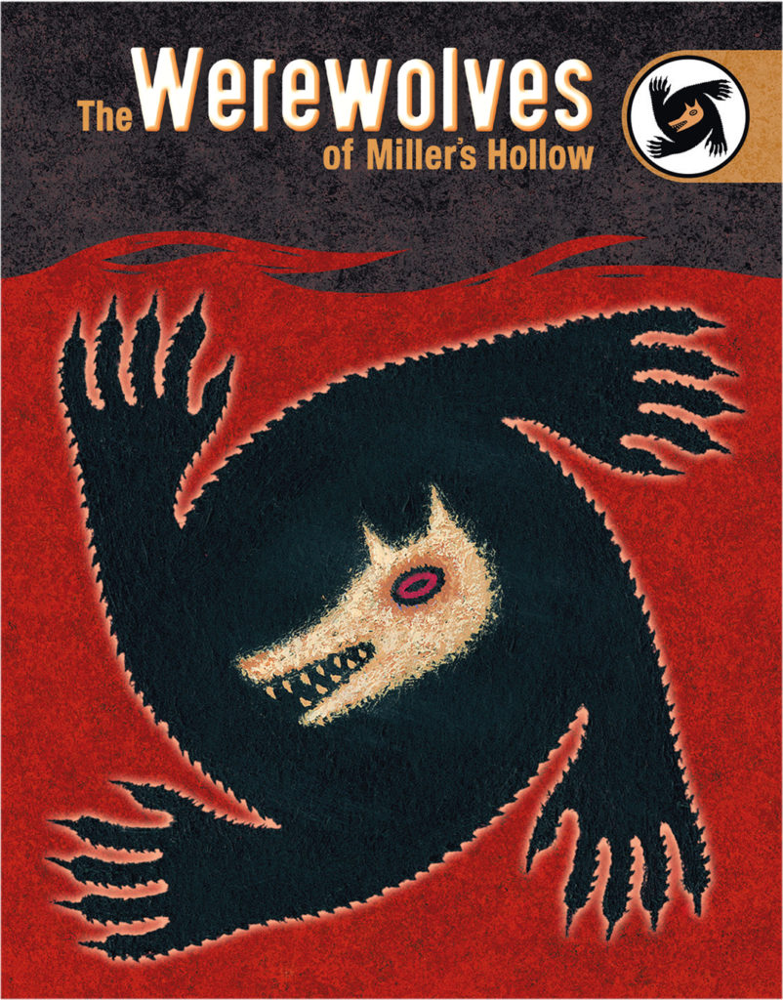
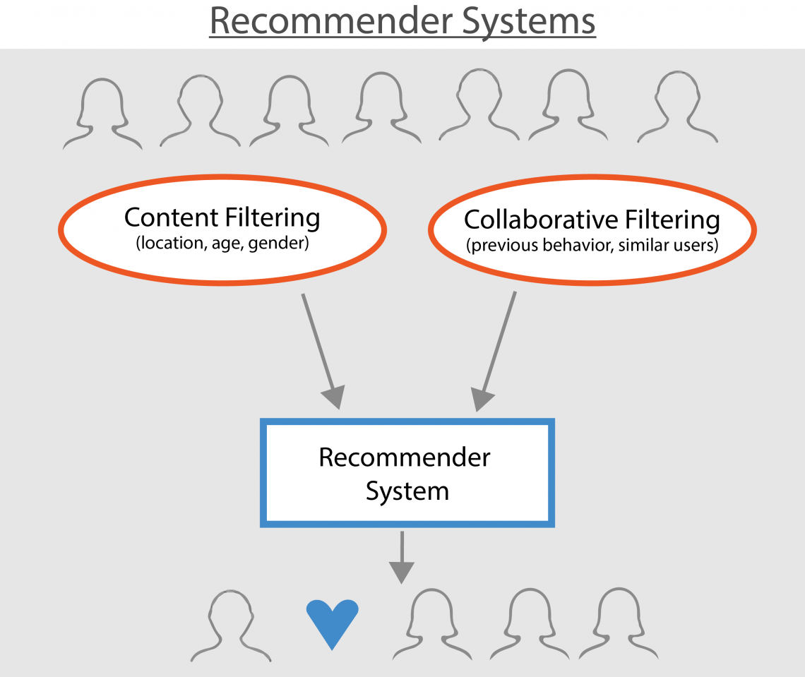
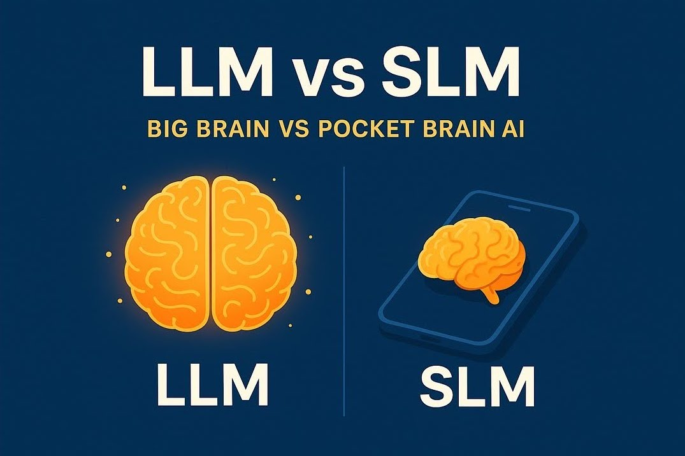

September 30th, 2026 (Future Work)
Audio Processing
The project is the placement at Collaboraite for my MSc dissertation. Following on from diarization, this project is to develop the methods to identify / recognize the same speaker across different video / audio files. For example, a user might upload a large number of videos, and wish to highlight when a specific person has spoken on any of these. Or a user might upload a new video, and be alerted that a specific speaker matches videos which have been processed previously.
May 1st, 2026 (In Progress)
Multi-Agent System

This project develops a multi-agent framework centered on an 8-player Werewolf game to investigate whether a group of weaker SLM agents can effectively compete against stronger LLM adversaries through iterative post-game coaching. Utilizing structured feedback from LLM observers, the villager-side agents refine their strategies through prompt updates to improve deception detection and strategic communication. The research provides insights into AI safety and trust modeling by evaluating how agents coordinate and form alliances under incomplete information and adversarial pressure.
March 23rd, 2026
Generative AI

The project extends the paper Feng et al. (arXiv:2510.23881) "Generating Creative Chess Puzzles" with two contributions: (1) Conditioning the model to generate puzzles matched to a particular difficulty level from the start and (2) Using LLM as a judge to assess the aesthetic quality of chess positions and measure how well its ratings correlate with those of human experts (to see whether an LLM can reliably replace manual evaluation).
March 13th, 2026
Recommendation Systems

I led a five-member team in developing an Amazon Recommendation System, where I defined the project methodology and managed the allocation of technical tasks. Our work involved researching and implementing databases to efficiently store both raw data and vectors, performing customer and product clustering, and implementing different approaches of recommendations on 100M+ reviews and 5.7M products. I specifically took over implementing ClickHouse and executing various recommendation strategies including content-based, collaborative filtering (ALS with tuned hyperparameters), and dynamic hybrid models. Ultimately, our team successfully generated contextually relevant recommendations and demonstrated the viability of ClickHouse as a high-performance data and vector store.
December 25th, 2025
Computer Vision
This project features a web application deployed on Streamlit Cloud that utilizes the YOLOv7 architecture for real-time computer vision. It is designed to accurately detect and localize various urban objects within both user-uploaded images and videos.
December 15th, 2025
Computer Vision

This project features a food classification system that utilizes DINOv2 for feature engineering. A custom linear classification layer is added to the model to help it recognize 101 distinct food categories it is trained on. The application is publicly hosted on Streamlit Cloud, allowing users to upload images for instant identification.
December 12th, 2025
Language Modeling

I led a five-member team to evaluate Small Language Models (SLMs) as a potential solution to the challenges posed by Large Language Models (LLMs), defining the project methodology and coordinating work allocation across the group. My technical contribution focused on conducting Domain-Adaptive Continued Pre-Training (DAPT) and Supervised Fine-Tuning (SFT) on these models, followed by designing and executing rigorous comparative evaluations against LLM benchmarks.